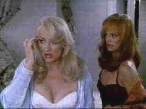

Universal/1992/103m/FS 1.33
 |
Plastic ladies.©Universal |
The colorful coastal sequences and hotel hijinx are all presented in bright high key colors that have been transferred surely to DVD. The image is very sharp and few NTSC artifacts if any are evident. The Dolby 5:1 sound adds excellent presence, but this is not a film that succeeds on its ambience.